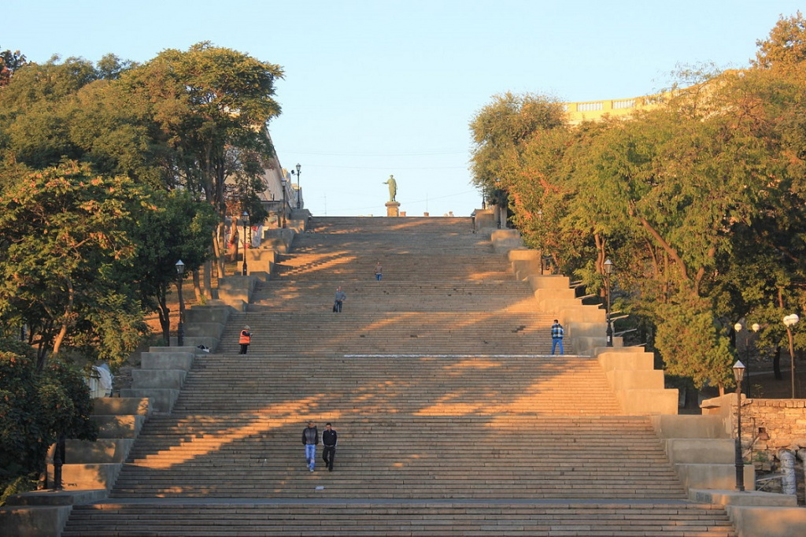
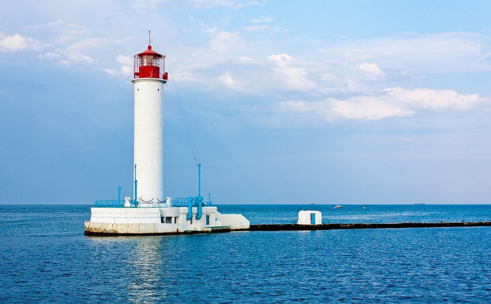
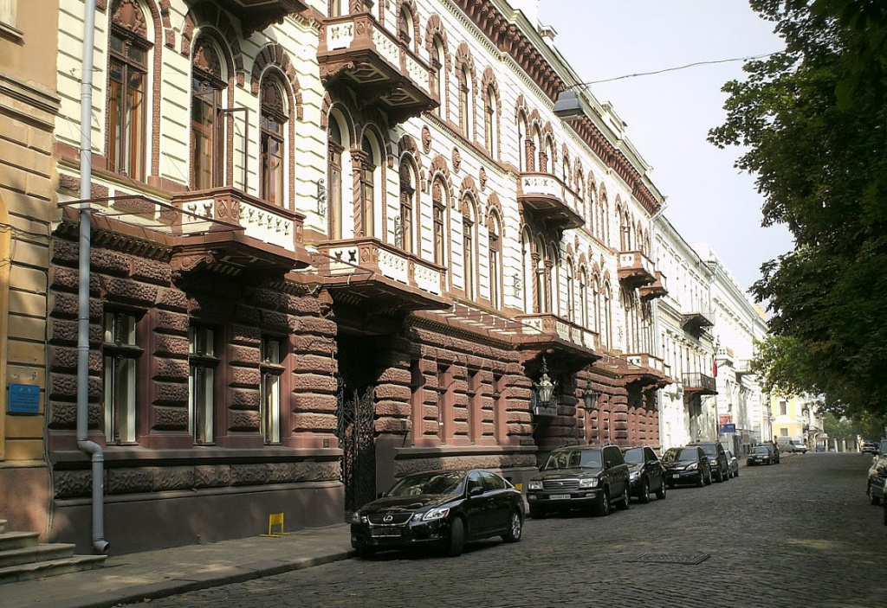

Одеса-мама
Одеса – Тут жили і працювали Іван Франко, Леся Українка, Михайло Коцюбинський та Олександр Пушкін. Місто на березі Чорного моря розбудовували Дюк де Рішельє, Ланжерон та Воронцов. Звісно, ми розповідатимемо про Одесу. Одесу недарма вважають південним центром України. Південна Пальміра приваблює й іноземців. Щорічно місто відвідує стільки туристів, що місцеві чиновники не встигають їх навіть приблизно порахувати.За рейтингом журналу «Фокус», у 2011 році Одеса стала найкращим містом у країні для життя пересічного українця. Вперше за 5 років існування рейтингу Одеса посіла перше місце. До перемоги місто привела туристична привабливість, активне культурне життя, висока ділова активність населення та фактична відсутність безробіття.
Популярні місця в Одесі:
  Потьомкінські сходиУнікальний проєкт самого графа Воронцова. Ці сходи були побудовані багато десятиліть тому, але дотепер дивують навіть досвідчених туристів. Щорічно тут влаштовують спортивні змагання, наприклад, хто швидше добіжить або спуститься зі сходів. Безстрашні екстремали спускаються звідси на незвичайних предметах, починаючи від лиж і велосипедів, закінчуючи раритетними автомобілями.
Одеське мореОдеса з видом на море та всі її цікаві місця популярні серед туристів як влітку, так і взимку. Сюди приїжджають за просторими пляжами, колоритними центральними вулицями, смачними ресторанами та гучними нічними клубами. Влітку тут можна нескінченно засмагати на сонці, а в холодний сезон – оглядати визначні пам'ятки Одеси. Можливо, саме тому одеські курорти так популярні серед українців різного віку.
Приморський бульварНайвдаліше місце, з якого варто починати екскурсію по Одесі, – це Приморський бульвар. Звідси можна дістатися буквально до всіх визначних місць міста. Бульвар розташувався прямо по центру, між гучним містом і спокійним чорноморським узбережжям. Прогулюючись бульваром, можна непомітно дістатися до таких відомих місць, як Потьомкінські сходи або Воронцовський палац.